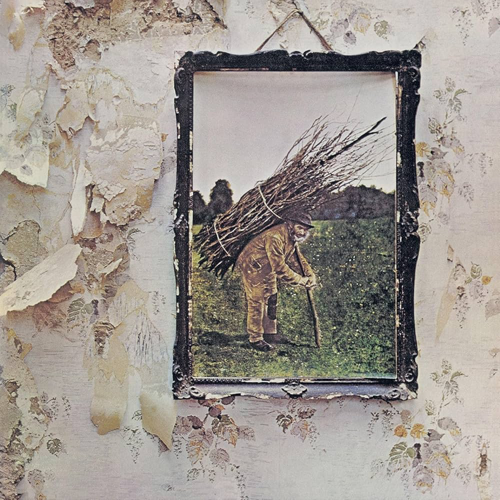
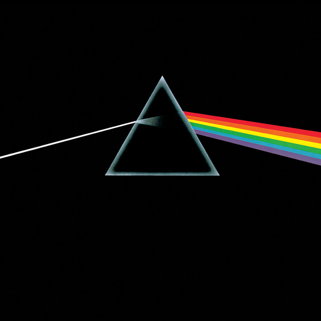
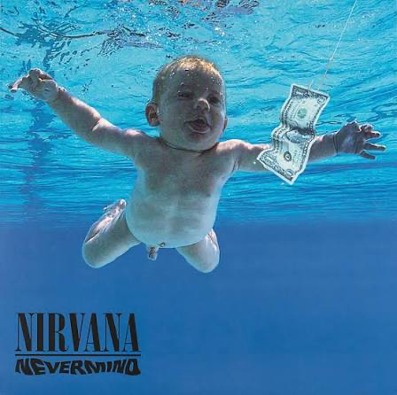
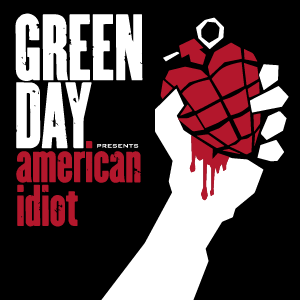
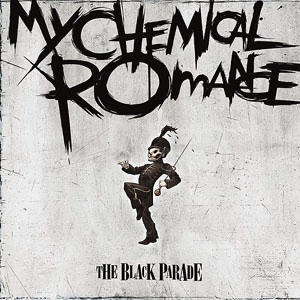
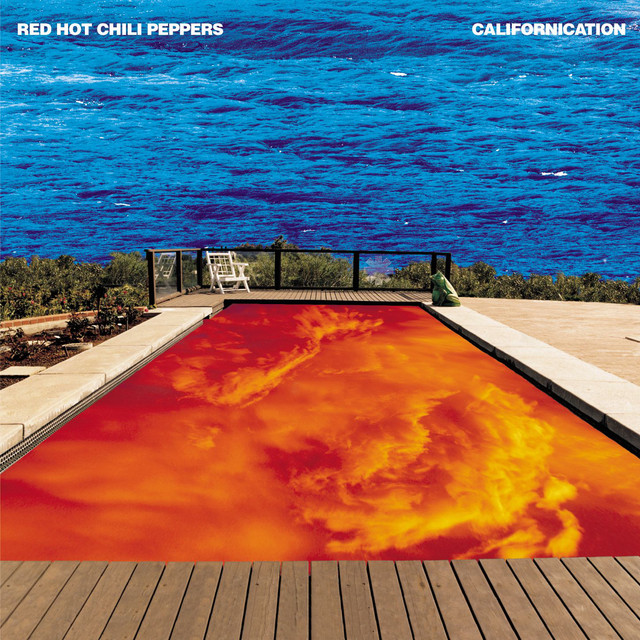
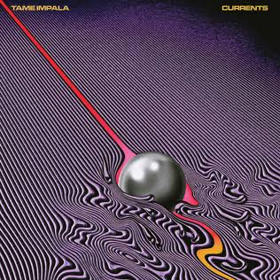
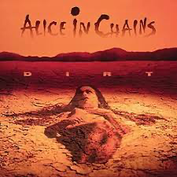
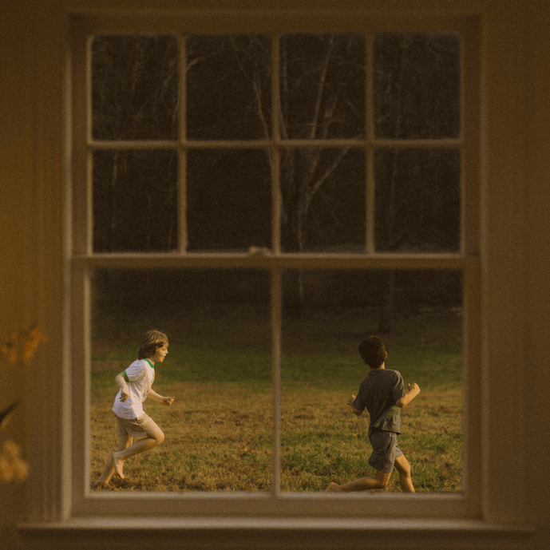
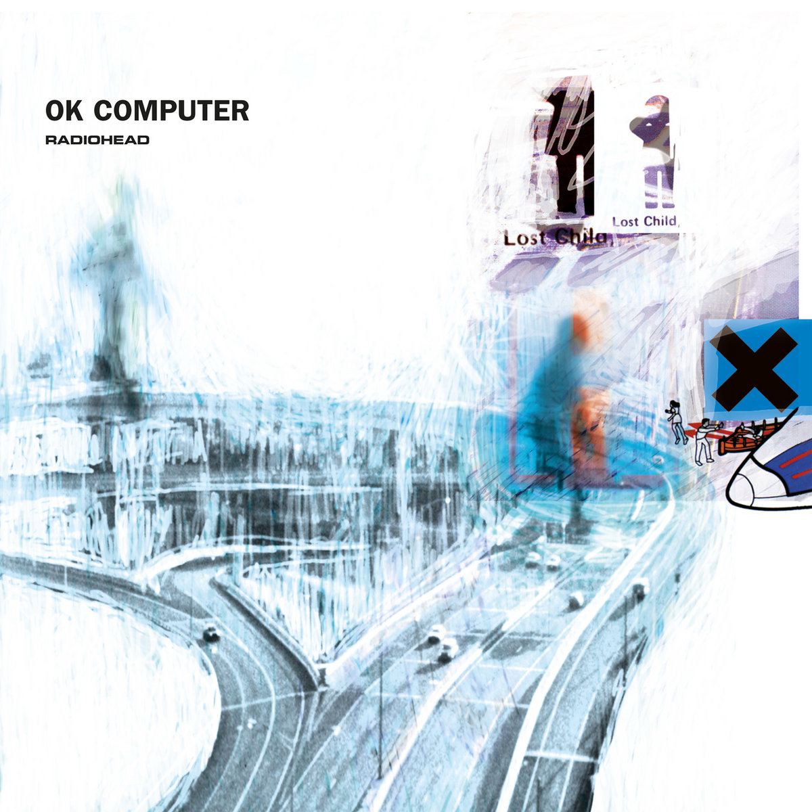

Horizon Design System from the Design Enablement Team
Designed the landing page for the new Horizon Blog, enhanced Figma component configurations, and educated user research through our UX certification course.
Designed the landing page for the new Horizon Blog, enhanced Figma component configurations, and educated user research through our UX certification course.

Led UX initiatives for all digital platforms of THON™. Designed for our mission of enhancing the lives of children and families impacted by childhood cancer.
A new volunteer initiative in the works — check back soon for the full story.

I am Product Designer at ServiceNow. I work laterally across design and engineering teams to deliver scalable design tools that push what is considered “standard”.
I love working with people who have yet to learn more about design. Seeing the “aha!” on peoples’ faces when good design just clicks is always worth the time and effort it takes to get there.
Aside from work, you can catch me playing guitar/piano/drums/bass, shooting hoops, or climbing rocks. I am also the #1 fan of the Washington Capitals, and you might catch me wearing #8 on a good day.











